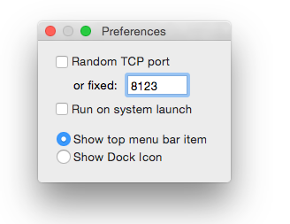

A way to escape Apple's jail.
This lightweight service gives a way to access iTunes database from virtually any networked device without having to deal with the proprietary DAAP protocol. Particullary you can sync your Android with the iTunes collection of tracks.
Technically this web service launched under Mac OS Xprovides simple REST protocol to list and download iTunes playlists and tracks from that iMac, MacBook, MacAir or Mac Mini.
Companion software
While the service is general purpose and is not intend to be used directly it was developed keeping in mind Android syncing tool and here it is: IlcatrazSync. It's must have app for those who have both Mac iTunes music collection and android handlets.
Features
Resource request sample: http://localhost:8123/media/playlists/F84F6DB889F6AD62/tracks/23A23165199F41A6
-
/media/playlists
gets list of all playlists
-
/media/playlists/ID
gets properties of a playlist with the id=ID
-
/media/playlists/ID/playlists
gets list of playlists of a playlist folder with the id=ID. Errors if not a folder.
-
/media/playlists/ID/tracks
gets list of tracks of a playlist with the id=ID
-
/media/playlists/ID/tracks/ID
gets properties of a track with the given ID of a playlist with the id=ID
-
/media/playlists/ID/tracks/ID/file
gets file content of a track with the given ID of a playlist with the id=ID
If requests have a result of an array of the resources the header X-Count contains length of the result. Use HEAD method to estimate the request cost.
If requests have a file as the result then the header X-Location contains path of the file inside iTunes Library. Use HEAD method if necessary.
iLcatraz publishes itself on Bonjour as _ilcatraz._tcp.
Presentation
iLcatraz's lives silently in the menubar or in dock and 99.99% of time does not bother you at all.
Only sometimes you might want to click the icon and change very few rudimentary settings.

Implementation details
We did not re-engineering native DAAP protocol to avoid license issues and its changes. Neither we parsed the XML database files.
Instead iLcatraz runs AppleScript against running instance of iTunes and it looks nothing but ordinal client using completely legal protocol accessing iTunes. Besides legality we are sure the playlists and tracks are presented in the very same way as they would by iTunes itself.
Having these benefits causes few significant drawbacks:
- iTunes always sits in the memory
- Requests are noticiable slow
- Requests that return too long, above 300 items, playlist may long forever
- Parallel requests may hang the service
Keep these issues in mind and do not try to use iLcatraz in the environment it does not fit to.
Pricing
The service is free and always to be free. It's price is $0.
Support or Contact
iLcatraz is in its early stage. It is not intended to be used in the heavy multiuser environment and limited by the AppleScript engine capabilities. Don't report about server hungs on parallel reports or the retrieving big playlists: issue HEAD request to get the count of tracks before trying to get the playlist content.
Having trouble with iLcatraz or some ideas? Create the issue and will try help you.